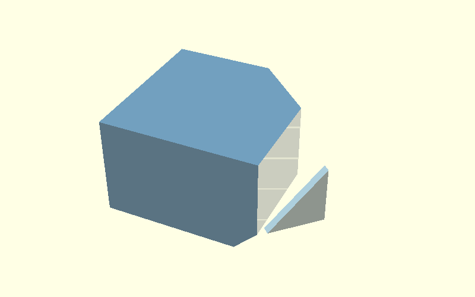

Beam demo: what goes into each hull()
This page uses one straight beam arm to explain the Corner Bracket geometry.
The visual rule is now the same for every hull operation:
first show the two input objects transparently, then show the result.
The end face is included, so both the normal chamfer and the elephant-foot relief continue over the kopse kant.
0. Plain beam

This is the unchanged reference.
1. Side chamfer cs: the two hull inputs

These are the actual two objects passed to hull():
- blue: the full outer outline, but narrower across the beam width;
- orange: the inset outer outline, but across the full beam width.
They are shown transparent and in the same coordinate system, so the geometric relationship is visible before OpenSCAD connects them.
2. Side chamfer cs: result

After hull(), the two input objects form the sloping side-edge chamfer.
The normal end-profile chamfer is included as well.
3. Elephant-foot ef: the two hull inputs

The already-chamfered beam is only faint context here.
For one printed side, the two ef inputs are:
- blue: the normal opening, one
efinward from the printed side; - orange: the expanded opening on the printed side itself.
The other side of the beam uses the same construction.
4. Elephant-foot ef: result

The ef hull is subtracted from the beam. The relief now runs along the long
bottom edge and the lower end profile is included too.
Most of the geometry is correct at this point.
5. The remaining problem

The problem is local: at the lower end corner, the ef relief reaches the
diagonal cs side bevel and leaves the unwanted termination.
6. Local correction: hull inputs

The small correction is again a hull() between two triangular profiles.
The beam is shown faintly only to locate them.
7. Corrected junction

The small local hull removes only the remaining corner defect.
So the complete logic is:
two transparent inputs → hull result → two transparent inputs → hull result → local junction correction.
Source
The complete demonstration is in
scad/hull_operations.scad.